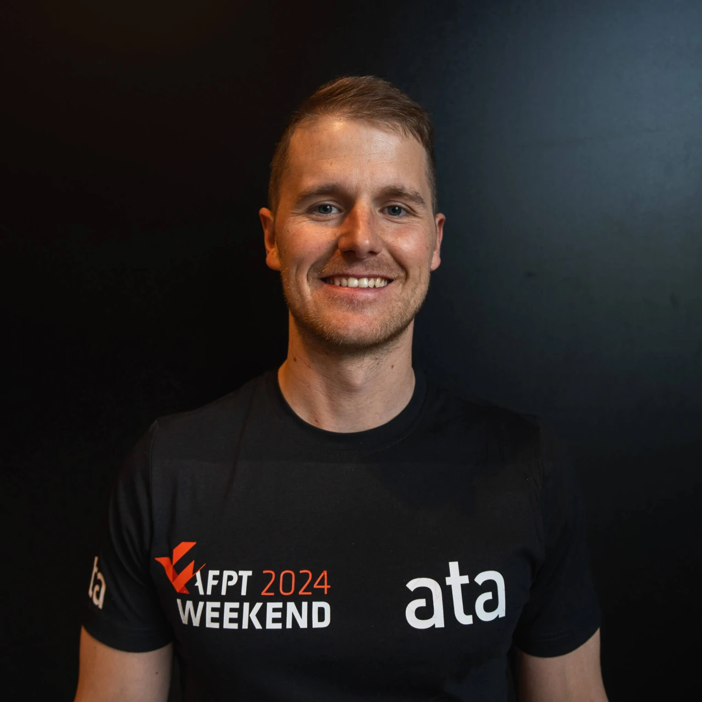

Assisting Head of Education at AFPT. Researching biomechanics and muscle hypertrophy. Trying to figure out how strength training actually works.

Stian Larsen has spent his career trying to figure out how strength training actually works. Not just what works, but why.
His PhD from Nord University focused on the biomechanics of the barbell back squat, and that curiosity has since expanded into muscle hypertrophy, exercise selection, and the practical side of programming for real athletes. He now has over 41 peer-reviewed papers to his name and more than 400 citations from researchers around the world.
Since 2021 he's been a lecturer at AFPT, Norway's leading personal training academy, where he's grown into the role of Assisting Head of Education. He helps shape how the next generation of trainers learns to think about evidence-based practice.
Outside the classroom, he still coaches. Athletes who work with him come away knowing not just what to do, but exactly why they're doing it.
Stian's research lives at the crossroads of biomechanics and practical training. The questions that drive him are ones coaches and athletes actually ask: which exercises grow muscle most effectively, how technique changes affect performance, and what the science really says about programming.
How does where you hold the bar change how you lift? How does your stance affect which muscles do the work? Stian has dug into these questions more thoroughly than almost anyone.
Which exercises actually build the most muscle? Does it matter where in the range of motion you load a muscle? Stian's recent work has tackled these questions head-on, with results that challenge a lot of conventional wisdom.
Some of Stian's most-cited work steps back from individual studies to look at the bigger picture. His systematic reviews and meta-analyses on autoregulation, free weights vs. machines, and drop sets have become go-to references in the field.
Not everything fits neatly into a category. Stian has also published on EMG methodology, what body measurements predict strength, and why Norwegians go to the gym. (That last one is more interesting than it sounds.)
A selection of Stian's published work. Full list on Google Scholar →
Journal of Sports Sciences · 21 citations
Frontiers in Physiology · 12 citations
Frontiers in Psychology · 10 citations
Sports Biomechanics · 20 citations
BMC Sports Science, Medicine and Rehabilitation · 50 citations
Sports Medicine-Open · 18 citations
PeerJ · 74 citations
Frontiers in Sports and Active Living · 44 citations
Stian came to AFPT as a student in 2019. By 2021 he was teaching. Now he's Assisting Head of Education, helping set the direction for how Norway's most respected personal training academy approaches evidence-based practice.
Visit AFPT →Stian's coaching is grounded in the same research he publishes. He works with athletes who want to get bigger and stronger, and who want to understand the reasoning behind everything they're doing in the gym.
Where it all started. Stian did his bachelor's, master's, and PhD at Nord University in Levanger, and continues to collaborate with the Sports Science Programme there.
Nord University →Stian speaks at conferences and seminars on strength training science, biomechanics, and hypertrophy. If you're looking for someone who can make research genuinely interesting to a room full of coaches, he's your guy.
Oslo, Norway · AFPT
Speaker at one of Scandinavia's biggest strength and conditioning gatherings, talking about the latest in hypertrophy research and biomechanics.
ISCS 2026 →Whether it's a research collaboration, a coaching question, a speaking invitation, or something else entirely — reach out.